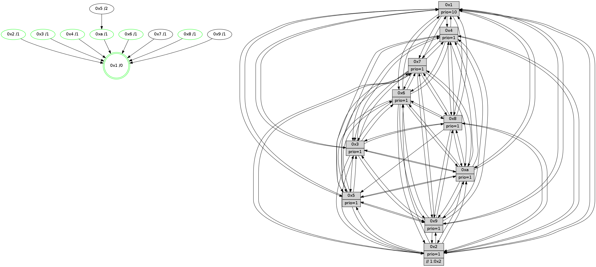

>> << IDX [start] -100 -25 -5 +0 +5 +25 +100 [1005.2955811]
 Previous packets
----------------------------------------------------------------------
1000.566796 beacon01(faad) #0 coord=01,02,03,04,05,06,07,0a,09,08 cycle=688.0ms assoc
-- color-indic=1 64 3e a5
1000.576778 beacon02(faad) #0 coord=01,02,03,04,05,06,07,0a,09,08 cycle=688.0ms assoc 64 ad 94
1000.586778 beacon03(faad) #0 coord=01,02,03,04,05,06,07,0a,09,08 cycle=688.0ms assoc 64 d7 d9
1000.596779 beacon04(faad) #0 coord=01,02,03,04,05,06,07,0a,09,08 cycle=688.0ms assoc 64 a0 33
1000.606779 beacon05(faad) #0 coord=01,02,03,04,05,06,07,0a,09,08 cycle=688.0ms assoc 64 da 7e
1000.616780 beacon06(faad) #0 coord=01,02,03,04,05,06,07,0a,09,08 cycle=688.0ms assoc 64 54 a9
1000.626781 beacon07(faad) #0 coord=01,02,03,04,05,06,07,0a,09,08 cycle=688.0ms assoc 64 2e e4
1000.636785 beacon0a(faad) #0 coord=01,02,03,04,05,06,07,0a,09,08 cycle=688.0ms assoc 64 5f ef
1000.646783 beacon09(faad) #0 coord=01,02,03,04,05,06,07,0a,09,08 cycle=688.0ms assoc 64 d1 38
1000.656783 beacon08(faad) #0 coord=01,02,03,04,05,06,07,0a,09,08 cycle=688.0ms assoc 64 ab 75
1000.668592 [Hello(7): seq=639 sym=2,3,5,6,4,8,9,10,1 sysInfo=hasWarning stat=2:9,0,9,13/3:7,0,3,12/5:8,2,7,0/6:6,1,4,7/4:12,9,1,1/8:4,1,2,1/9:1,4,5,0/10:2,7,9,2/1:10,14,5,0]
1000.671842 [Color(1) seq=320 @0:0 prio=10]
1000.673247 [Hello(8): seq=583 sym=5,2,3,4,9,6,7,10,1 sysInfo=hasWarning stat=5:10,10,6,13/2:10,0,15,5/3:11,5,1,12/4:6,2,14,8/9:4,8,6,1/6:12,12,0,11/7:3,14,6,1/10:15,13,9,1/1:4,10,1,0]
1000.675766 [Hello(10): seq=572 sym=6,2,3,8,7,5,9,4,1 sysInfo=hasWarning stat=6:15,14,4,4/2:2,15,13,5/3:10,7,10,8/8:13,8,5,2/7:4,1,4,2/5:10,3,5,13/9:5,8,4,0/4:12,4,7,7/1:15,7,9,1]
1000.679424 [Hello(9): seq=583 sym=2,5,3,4,7,6,8,10,1 sysInfo=hasWarning stat=2:9,7,0,3/5:0,10,14,4/3:10,14,14,12/4:4,13,11,7/7:5,9,0,9/6:12,9,6,9/8:0,4,1,3/10:8,14,3,1/1:6,7,4,1]
1000.683096 [Color(5) seq=274 @0:0 prio=1]
1000.686954 [Hello(4): seq=639 sym=5,7,6,2,3,9,8,10,1 sysInfo= stat=5:6,10,15,12/7:10,4,2,8/6:2,15,12,10/2:7,5,10,10/3:13,13,12,8/9:6,9,5,8/8:15,15,4,3/10:5,5,8,10/1:3,9,5,1]
----------------------------------------------------------------------
1001.354927 beacon01(faad) #0 coord=01,02,03,04,05,06,07,0a,09,08 cycle=688.0ms assoc
-- color-indic=1 64 ea 90
1001.364910 beacon02(faad) #0 coord=01,02,03,04,05,06,07,0a,09,08 cycle=688.0ms assoc 64 79 a1
1001.374909 beacon03(faad) #0 coord=01,02,03,04,05,06,07,0a,09,08 cycle=688.0ms assoc 64 03 ec
1001.384910 beacon04(faad) #0 coord=01,02,03,04,05,06,07,0a,09,08 cycle=688.0ms assoc 64 74 06
1001.394911 beacon05(faad) #0 coord=01,02,03,04,05,06,07,0a,09,08 cycle=688.0ms assoc 64 0e 4b
1001.404910 beacon06(faad) #0 coord=01,02,03,04,05,06,07,0a,09,08 cycle=688.0ms assoc 64 80 9c
1001.414910 beacon07(faad) #0 coord=01,02,03,04,05,06,07,0a,09,08 cycle=688.0ms assoc 64 fa d1
1001.424916 beacon0a(faad) #0 coord=01,02,03,04,05,06,07,0a,09,08 cycle=688.0ms assoc 64 8b da
1001.434915 beacon09(faad) #0 coord=01,02,03,04,05,06,07,0a,09,08 cycle=688.0ms assoc 64 05 0d
1001.444916 beacon08(faad) #0 coord=01,02,03,04,05,06,07,0a,09,08 cycle=688.0ms assoc 64 7f 40
1001.456151 [Hello(5): seq=640 sym=7,6,4,3,1,9,8,10,2 sysInfo=hasWarning stat=7:0,14,7,10/6:2,11,6,0/4:11,13,2,8/3:0,9,11,10/1:0,0,7,1/9:6,1,3,5/8:4,12,12,10/10:6,13,11,5/2:6,0,1,1]
1001.460051 [Hello(2): seq=636 sym=4,5,7,6,3,9,8,10,1 sysInfo=hasWarning stat=4:7,14,7,6/5:3,12,9,2/7:9,0,7,9/6:0,1,13,9/3:14,4,11,5/9:4,12,0,5/8:9,11,9,9/10:12,2,0,10/1:12,4,3,1]
1001.465313 [Hello(6): seq=640 sym=2,3,5,4,7,9,8,10,1 sysInfo= stat=2:11,0,0,1/3:14,8,2,10/5:0,0,2,13/4:13,14,9,2/7:2,9,1,7/9:2,12,2,5/8:14,10,14,3/10:14,4,7,11/1:7,11,3,1]
1001.469114 [Color(6) seq=272 @0:0 prio=1]
1001.470948 [Hello(1): seq=549 sym=4,2,9,5,10,3,8,6,7 sysInfo=coloring-mode-on,ColoringModeRequestCalled stat=4:2,4,4,2/2:2,3,1,12/9:0,12,2,6/5:7,9,10,6/10:1,6,2,3/3:6,7,3,3/8:8,8,2,1/6:3,8,0,11/7:0,15,3,12]
1001.473751 [Color(10) seq=244 @0:0 prio=1]
1001.475905 [Hello(3): seq=640 sym=1,7,6,2,4,8,9,10,5 sysInfo= stat=1:3,0,14,0/7:8,11,10,8/6:0,10,12,3/2:6,2,13,11/4:15,5,0,7/8:10,1,9,2/9:9,3,14,11/10:6,8,13,3/5:8,2,8,12]
1001.480955 [Color(3) seq=269 @0:0 prio=1]
----------------------------------------------------------------------
1002.143058 beacon01(faad) #0 coord=01,02,03,04,05,06,07,0a,09,08 cycle=688.0ms assoc
-- color-indic=1 64 56 95
1002.153041 beacon02(faad) #0 coord=01,02,03,04,05,06,07,0a,09,08 cycle=688.0ms assoc 64 c5 a4
1002.163040 beacon03(faad) #0 coord=01,02,03,04,05,06,07,0a,09,08 cycle=688.0ms assoc 64 bf e9
1002.173042 beacon04(faad) #0 coord=01,02,03,04,05,06,07,0a,09,08 cycle=688.0ms assoc 64 c8 03
1002.183042 beacon05(faad) #0 coord=01,02,03,04,05,06,07,0a,09,08 cycle=688.0ms assoc 64 b2 4e
1002.193043 beacon06(faad) #0 coord=01,02,03,04,05,06,07,0a,09,08 cycle=688.0ms assoc 64 3c 99
1002.203043 beacon07(faad) #0 coord=01,02,03,04,05,06,07,0a,09,08 cycle=688.0ms assoc 64 46 d4
1002.213047 beacon0a(faad) #0 coord=01,02,03,04,05,06,07,0a,09,08 cycle=688.0ms assoc 64 37 df
1002.223047 beacon09(faad) #0 coord=01,02,03,04,05,06,07,0a,09,08 cycle=688.0ms assoc 64 b9 08
1002.233047 beacon08(faad) #0 coord=01,02,03,04,05,06,07,0a,09,08 cycle=688.0ms assoc 64 c3 45
1002.244228 [Hello(9): seq=584 sym=2,5,3,4,7,6,8,10,1 sysInfo=hasWarning stat=2:10,7,0,3/5:1,11,14,4/3:11,15,14,12/4:5,14,11,7/7:5,9,0,9/6:13,10,6,9/8:0,4,1,3/10:8,15,3,1/1:7,7,4,1]
1002.247403 [Hello(10): seq=573 sym=6,2,3,8,7,5,9,4,1 sysInfo=hasWarning stat=6:15,14,4,4/2:2,15,13,5/3:11,8,10,8/8:13,8,5,2/7:4,1,4,2/5:11,4,5,13/9:6,8,4,0/4:13,4,7,7/1:15,7,9,1]
1002.250754 [STC(1) #0.139 tree-change,inconsistent-stability,stable,to-color d=0]
1002.252171 [Hello(7): seq=640 sym=2,3,5,6,4,8,9,10,1 sysInfo=hasWarning stat=2:10,0,9,13/3:8,1,3,12/5:9,3,7,0/6:7,2,4,7/4:13,9,1,1/8:5,2,2,1/9:2,4,5,0/10:3,8,9,2/1:11,15,5,0]
1002.255084 [Hello(8): seq=584 sym=5,2,3,4,9,6,7,10,1 sysInfo=hasWarning stat=5:11,11,6,13/2:10,0,15,5/3:12,6,1,12/4:7,2,14,8/9:5,8,6,1/6:13,13,0,11/7:3,14,6,1/10:0,14,9,1/1:5,10,1,0]
1002.258494 [Color(5) seq=275 @0:0 prio=1]
1002.263679 [Hello(4): seq=640 sym=5,7,6,2,3,9,8,10,1 sysInfo= stat=5:7,10,15,12/7:10,4,2,8/6:3,0,12,10/2:7,5,10,10/3:14,14,12,8/9:6,9,5,8/8:15,15,4,3/10:5,6,8,10/1:4,9,5,1]
----------------------------------------------------------------------
1002.931191 beacon01(faad) #0 coord=01,02,03,04,05,06,07,0a,09,08 cycle=688.0ms assoc
-- color-indic=1 64 92 9b
1002.941174 beacon02(faad) #0 coord=01,02,03,04,05,06,07,0a,09,08 cycle=688.0ms assoc 64 01 aa
1002.951172 beacon03(faad) #0 coord=01,02,03,04,05,06,07,0a,09,08 cycle=688.0ms assoc 64 7b e7
1002.961174 beacon04(faad) #0 coord=01,02,03,04,05,06,07,0a,09,08 cycle=688.0ms assoc 64 0c 0d
1002.971173 beacon05(faad) #0 coord=01,02,03,04,05,06,07,0a,09,08 cycle=688.0ms assoc 64 76 40
1002.981174 beacon06(faad) #0 coord=01,02,03,04,05,06,07,0a,09,08 cycle=688.0ms assoc 64 f8 97
1002.991175 beacon07(faad) #0 coord=01,02,03,04,05,06,07,0a,09,08 cycle=688.0ms assoc 64 82 da
1003.001179 beacon0a(faad) #0 coord=01,02,03,04,05,06,07,0a,09,08 cycle=688.0ms assoc 64 f3 d1
1003.011180 beacon09(faad) #0 coord=01,02,03,04,05,06,07,0a,09,08 cycle=688.0ms assoc 64 7d 06
1003.021180 beacon08(faad) #0 coord=01,02,03,04,05,06,07,0a,09,08 cycle=688.0ms assoc 64 07 4b
1003.032413 [STC(9)->1 #0.139 tree-change,inconsistent-stability,to-color d=1]
1003.034041 [Hello(5): seq=641 sym=7,6,4,3,1,9,10,2 sysInfo=hasWarning stat=7:0,14,7,10/6:3,12,6,0/4:12,14,2,8/3:1,10,11,10/1:1,0,7,1/9:7,1,3,5/10:6,14,11,5/2:7,0,1,1]
1003.036765 [STC(10)->1 #0.139 tree-change,inconsistent-stability,stable,to-color d=1]
1003.039314 [Color(8) seq=274 @0:0 prio=1]
1003.040692 [Hello(6): seq=641 sym=2,3,5,4,7,9,8,10,1 sysInfo= stat=2:11,0,0,1/3:15,9,2,10/5:1,1,2,13/4:14,14,9,2/7:3,9,1,7/9:3,12,2,5/8:15,10,14,3/10:15,5,7,11/1:8,11,4,1]
1003.043506 [STC(6)->1 #0.139 tree-change,inconsistent-stability,stable,to-color d=1]
1003.045156 [Color(6) seq=273 @0:0 prio=1]
1003.047840 [STC(3)->1 #0.139 tree-change,inconsistent-stability,stable,to-color d=1]
1003.050774 [Color(3) seq=270 @0:0 prio=1]
1003.053277 [Hello(2): seq=637 sym=4,5,7,6,3,9,8,10,1 sysInfo=hasWarning stat=4:8,15,7,6/5:3,13,9,2/7:10,0,7,9/6:1,2,13,9/3:15,5,11,5/9:5,12,0,5/8:10,11,9,9/10:13,3,0,10/1:13,4,4,1]
1003.056435 [STC(2)->1 #0.139 tree-change,inconsistent-stability,stable,to-color d=1]
1003.058015 [Color(10) seq=245 @0:0 prio=1]
1003.059656 [TreeStatus(2)-.->1 #0.139 tree-change,inconsistent-stability,stable child=1]
----------------------------------------------------------------------
1003.719320 beacon01(faad) #0 coord=01,02,03,04,05,06,07,0a,09,08 cycle=688.0ms assoc
-- color-indic=1 64 2e 9e
1003.729303 beacon02(faad) #0 coord=01,02,03,04,05,06,07,0a,09,08 cycle=688.0ms assoc 64 bd af
1003.739303 beacon03(faad) #0 coord=01,02,03,04,05,06,07,0a,09,08 cycle=688.0ms assoc 64 c7 e2
1003.749305 beacon04(faad) #0 coord=01,02,03,04,05,06,07,0a,09,08 cycle=688.0ms assoc 64 b0 08
1003.759303 beacon05(faad) #0 coord=01,02,03,04,05,06,07,0a,09,08 cycle=688.0ms assoc 64 ca 45
1003.769302 beacon06(faad) #0 coord=01,02,03,04,05,06,07,0a,09,08 cycle=688.0ms assoc 64 44 92
1003.779303 beacon07(faad) #0 coord=01,02,03,04,05,06,07,0a,09,08 cycle=688.0ms assoc 64 3e df
1003.789309 beacon0a(faad) #0 coord=01,02,03,04,05,06,07,0a,09,08 cycle=688.0ms assoc 64 4f d4
1003.799310 beacon09(faad) #0 coord=01,02,03,04,05,06,07,0a,09,08 cycle=688.0ms assoc 64 c1 03
1003.809309 beacon08(faad) #0 coord=01,02,03,04,05,06,07,0a,09,08 cycle=688.0ms assoc 64 bb 4e
1003.820791 [Hello(7): seq=641 sym=2,3,5,6,4,8,9,10,1 sysInfo=hasWarning stat=2:11,0,10,14/3:8,2,4,12/5:10,4,7,0/6:8,3,5,7/4:13,9,1,1/8:6,3,2,1/9:2,4,6,0/10:3,9,10,2/1:11,0,5,0]
1003.823330 [Hello(10): seq=574 sym=6,2,3,8,7,5,9,4,1 sysInfo=hasWarning stat=6:15,14,4,4/2:2,15,13,6/3:11,8,10,8/8:14,8,5,2/7:5,1,4,2/5:11,5,5,13/9:6,8,5,0/4:13,4,7,7/1:0,8,10,1]
1003.826745 [Hello(8): seq=585 sym=5,2,3,4,9,6,7,10,1 sysInfo=hasWarning stat=5:12,12,6,13/2:11,0,0,6/3:12,7,2,12/4:7,2,14,8/9:5,8,7,1/6:14,14,1,11/7:3,14,6,1/10:0,15,9,1/1:5,11,1,0]
1003.829580 [Hello(4): seq=641 sym=5,7,6,2,3,9,8,10,1 sysInfo= stat=5:8,10,15,12/7:10,4,2,8/6:3,0,12,10/2:8,5,11,11/3:14,14,12,8/9:6,9,6,8/8:15,15,4,3/10:5,7,8,10/1:4,9,5,1]
1003.832930 [STC(5)->10-.->1 #0.139 tree-change,inconsistent-stability,to-color d=2]
1003.836172 [TreeStatus(5)-.->1 #0.139 tree-change,inconsistent-stability child=1]
1003.838626 [Hello(9): seq=585 sym=2,5,3,4,7,6,8,10,1 sysInfo=hasWarning stat=2:11,7,1,4/5:2,12,14,4/3:12,15,15,12/4:6,15,11,7/7:6,9,0,9/6:14,11,7,9/8:1,5,1,3/10:9,0,3,1/1:7,7,5,1]
----------------------------------------------------------------------
1004.507452 beacon01(faad) #0 coord=01,02,03,04,05,06,07,0a,09,08 cycle=688.0ms assoc
-- color-indic=1 64 1a 86
1004.517435 beacon02(faad) #0 coord=01,02,03,04,05,06,07,0a,09,08 cycle=688.0ms assoc 64 89 b7
1004.527434 beacon03(faad) #0 coord=01,02,03,04,05,06,07,0a,09,08 cycle=688.0ms assoc 64 f3 fa
1004.537434 beacon04(faad) #0 coord=01,02,03,04,05,06,07,0a,09,08 cycle=688.0ms assoc 64 84 10
1004.547435 beacon05(faad) #0 coord=01,02,03,04,05,06,07,0a,09,08 cycle=688.0ms assoc 64 fe 5d
1004.557435 beacon06(faad) #0 coord=01,02,03,04,05,06,07,0a,09,08 cycle=688.0ms assoc 64 70 8a
1004.567436 beacon07(faad) #0 coord=01,02,03,04,05,06,07,0a,09,08 cycle=688.0ms assoc 64 0a c7
1004.577439 beacon0a(faad) #0 coord=01,02,03,04,05,06,07,0a,09,08 cycle=688.0ms assoc 64 7b cc
1004.587439 beacon09(faad) #0 coord=01,02,03,04,05,06,07,0a,09,08 cycle=688.0ms assoc 64 f5 1b
1004.597439 beacon08(faad) #0 coord=01,02,03,04,05,06,07,0a,09,08 cycle=688.0ms assoc 64 8f 56
1004.608394 [Hello(1): seq=551 sym=4,2,9,5,10,3,8,6,7 sysInfo=coloring-mode-on,ColoringModeRequestCalled stat=4:2,4,4,2/2:3,3,2,13/9:2,12,2,6/5:7,9,10,6/10:3,8,3,3/3:7,9,4,3/8:8,9,2,1/6:4,9,1,11/7:1,15,3,12]
1004.610819 [Hello(5): seq=642 sym=7,6,4,3,1,9,10,2 sysInfo=hasWarning stat=7:0,14,7,10/6:4,13,7,0/4:12,15,2,8/3:1,10,12,10/1:1,0,7,1/9:8,1,3,5/10:6,15,12,5/2:8,0,2,2]
1004.613527 [Color(4) seq=234 @0:0 prio=1]
1004.614829 [Hello(6): seq=642 sym=2,3,5,4,7,9,8,10,1 sysInfo= stat=2:12,0,1,2/3:15,10,3,10/5:2,1,3,14/4:15,14,9,2/7:4,9,1,7/9:4,12,3,5/8:0,10,14,3/10:0,6,7,11/1:8,11,4,1]
1004.619561 [Color(6) seq=274 @0:0 prio=1]
1004.622294 [Color(8) seq=275 @0:0 prio=1]
1004.625366 [Hello(3): seq=642 sym=1,7,6,2,4,8,9,10,5 sysInfo= stat=1:4,2,15,0/7:10,11,10,8/6:0,10,12,3/2:7,2,14,12/4:0,5,0,7/8:12,1,9,2/9:11,3,15,11/10:8,9,13,3/5:9,3,9,12]
1004.628282 [TreeStatus(10)-.->1 #0.139 tree-change,inconsistent-stability,stable child=1]
1004.629472 [Color(3) seq=271 @0:0 prio=1]
1004.631847 [Color(10) seq=246 @0:0 prio=1]
1004.636677 [Hello(2): seq=638 sym=4,5,7,6,3,9,8,10,1 sysInfo=hasWarning stat=4:9,15,7,6/5:3,13,10,2/7:11,0,7,9/6:1,2,13,9/3:15,5,11,5/9:6,12,1,5/8:11,11,9,9/10:14,3,0,10/1:13,4,4,1]